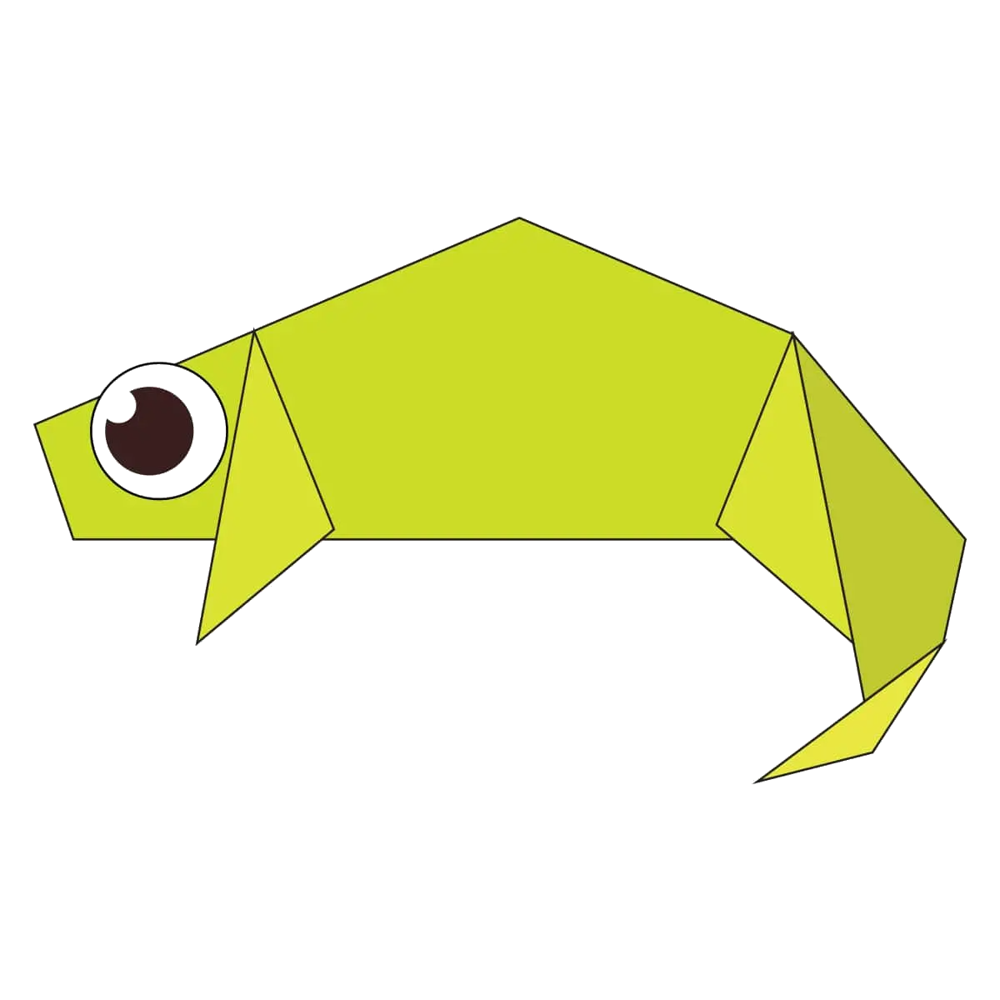
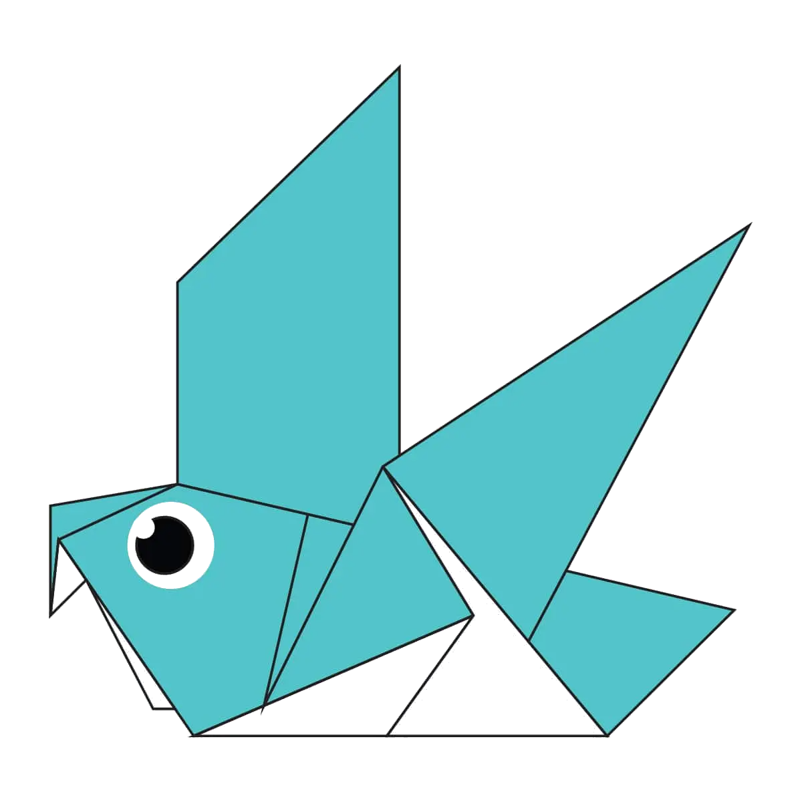
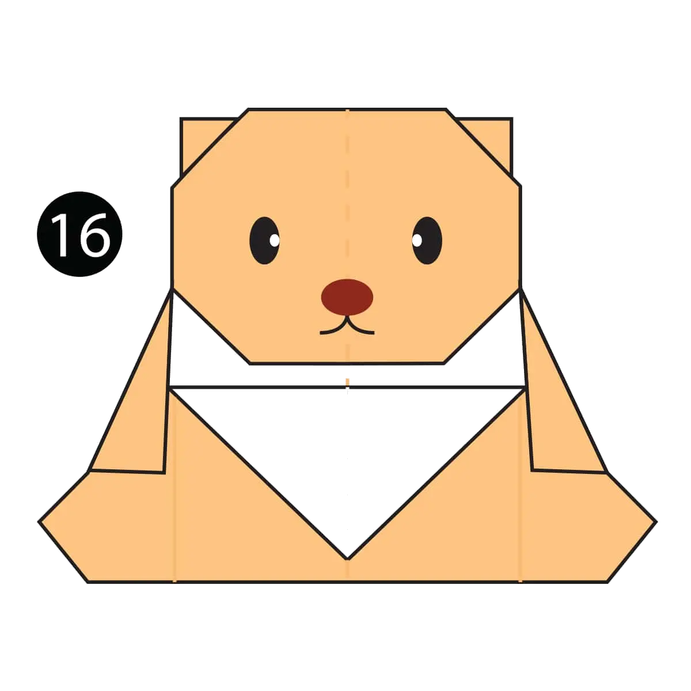
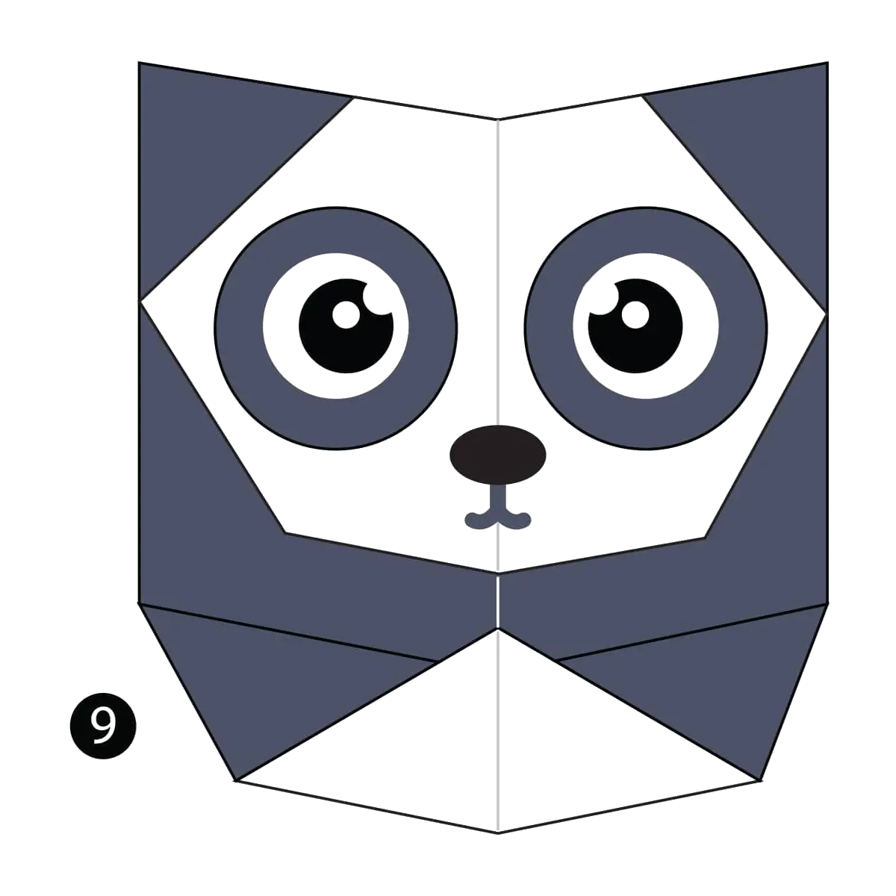
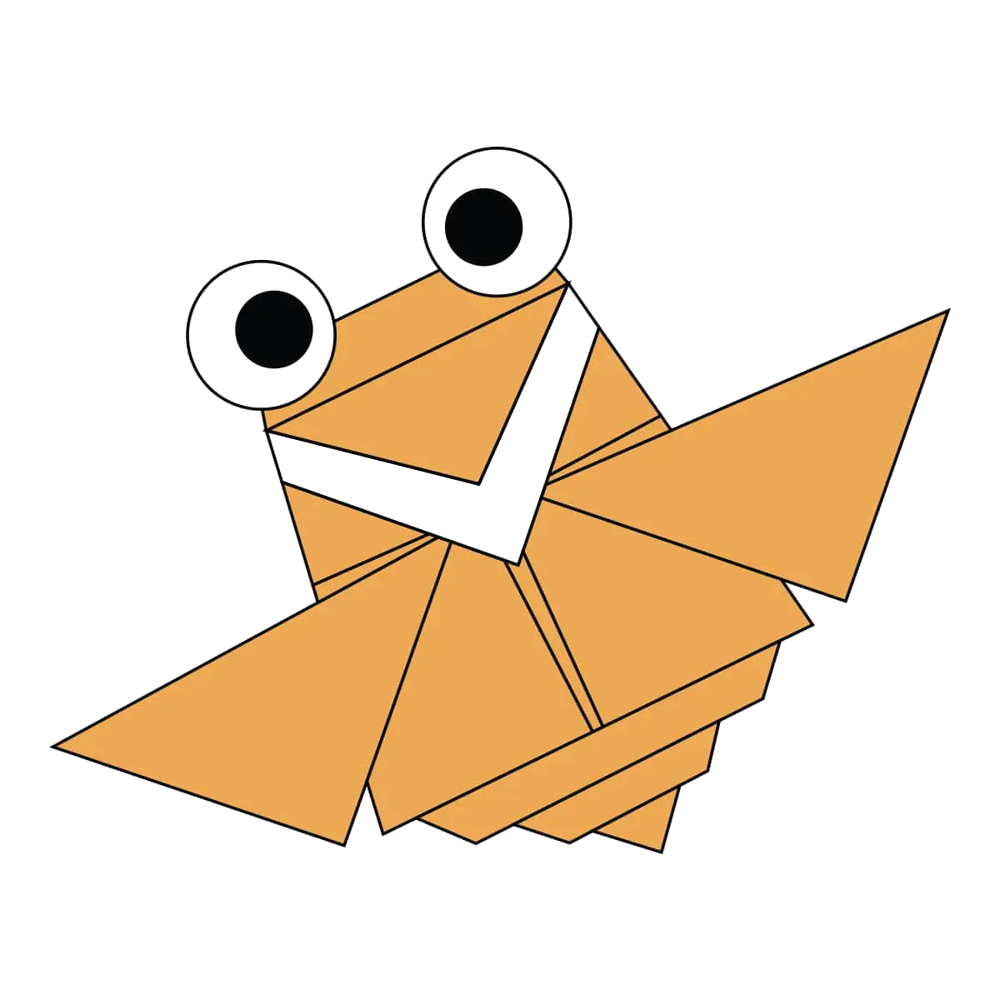

ORAGAMI DESIGNS
ABOUT ME
FOLLOW US
INTERESTING FACTS ABOUT CAMEL
- Camels ears are very funny.
- Camel can walk across the sand easily becausee of its special designed feet.
- When they find water they drink as much as water.

INTERESTING FACTS ABOUT CHAMELEON
- Chameleons are the reptiles that are the part of iguana suborder.
- Changing skin color are the important part of communication among them.
- Most Chameleons have a prehensile tail that they used to wrap the tree branches

INTERESTING FACTS ABOUT PIGEON
- Pigeons are incredibly complex and intelligent animals.
- Pigeons are renowned for there outstanding ability.
- Pigeons have excellent hearing abilities.

INTERESTING FACTS ABOUT teddy bear
- The first toy stuffed bear was created by German toymaker Margarete Steiff.
- She created a soft plush with movable arms and legs and a friendly face after taking her nephew to the zoo in 1903.
- One of the world's most beloved toys was named in honor of President Theodore Roosevelt.

INTERESTING FACTS ABOUT PANDA
- They have great camouflage for their environment.
- Their eyes are different to normal bears.
- Cubs are well protected in their first month.

INTERESTING FACTS ABOUT FLYING CICADA
- Cicadas are not locusts.
- Cicadas have one of the longest insect lifespans.
- Cicadas inundate forests as a survival mechanism.